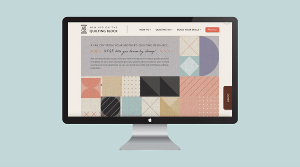

Create a responsive web designed for beginning quilters to give them tools and tips to get started.
MY ROLE
Brand Design / Information Architecture / Responsive Web Design
TIMELINE
10/15/19 - 11/02/19 (3 weeks)
TEAM
Tae Yun Koo / Asante Bells / Michele Heckmann
WHY QUILTING
The quilting industry is doing a terrible job of attracting the under 45 sewists and many
still behave like they did in the 1970-80's.
The largest percentage of crafters are between 18-34 years old (41%).
These crafters get most information online and from online videos.
Maker culture emphasizes learning-through-doing (active learning) in a social environment.
Additionally, there has been a renewed interest in hand made crafts as people are looking
for ways to personalize their belongings.
POV STATEMENT
New Kid on the Quilting Block will be designed to teach skill building quilting techniques for new quilters.
We have observed that most sites aren’t designed to step users through the quilting
process - step by step - which often leads to more questions for new quilters.
RESEARCH
We launched a survey and completed one-on-one interviews with people who are currently
quilters or who are interested in learning to quilt to understand their challenges in getting started and learn
what they wished they could get help with.
Users were more interested in learning technical skills like 1/4" seam allowances than basic skills.
Time Management was a obstacle to success.
Finding patterns that match their skill levels causes frustrations for new quilters.
MEET RENEE!
A busy stay-at-home mom who suddenly finds that she has more time on her
hands now that her daughter is in school full time. Renee is sentimental and has boxes of her daughters outfits
that she doesn’t want to get rid of, but is running out of room to store.
Renee talks to her friend who shows her a quilt she made with her favorite baby clothes. Renee is intrigued by
the idea - because it reuses the clothes she has in a meaningful way and it will be something that she can share
with her daughter when she is older. She finds NKQB and it delighted at the approach they take on teaching a
beginner!
HOW
How might we interactively guide, encourage, and support new quilters learning the craft while minimizing
frustration in the process, clearly defining the stages of the process, and highlighting a standard starting
point?
The problem as we see it is that most quilting sites are simply a repository of information and very few - if
any
- guide a new quilter through the quilting process.
So our question is how do we build a site that interactively guides, encourages and supports new quilters
learning
the craft while minimizing the frustration that so many new quilters encounter. This frustration causes many
people to give up before they even get started.
As we started sketching and thinking about our design, we kept these points in mind:
The competitive research told us that we needed to keep our design simple.
We knew from all of our research that this site needed to be interactive.
We decided to focus on new quilters specifically rather than trying to serve quilters at all levels.
BRANDING
The logo should immediately let people know that this is a site for quilting so we incorporated the logo
into a spool of thread and kept the font choices simple and easy to read.
We wanted to make the site someplace people wanted to visit so we wanted the voice to be friendly, simple
and a ittle bit fun!
HIGH FIDELITY MOCKUPS
Here is the high-fidelity prototype we landed on.
When we tested this with users- we specifically picked
non-quilters to see if they felt that they got the information that they needed to feel confident in
starting a project.
Guide me I #hastag
We moved the #HASHTAG to the hero image so that people would have a call to action and
could get their personalized skill level up front before they began exploring the site’s content.
Seam Allowance
We realized that people aren’t going to take a perfectly centered picture of their seams so
we adjusted the sliders so they could move them to line up with their photos.
Lingo
People liked the idea of being able to create their own personal glossary with terms that they needed
or had interest in.
Profile
We kept the information simple and to a minimum. We also added the “my Machine” tab so they could
enter info about their sewing machine so we could offer machine specific feedback and support (i.e.
press this button on the machine to adjust your tension).
HERO, NKQB's FIRST IMPRESSION
The first thing users will come across the website will be the hero, the first impression of the website.
As interesting as the name of the website sounds, we wanted to give an exciting experience through the hero
with kind guidance to the beginners on where to go when they visit our website and provide brief information.

NKQB LET's YOU LEARN BY DOING!
Testing and feedback from both quilters and non-quilters helped us develop an easy to use site.
Communication, sharing, and leveraging our individual strengths were keys to our success.


 Renee talks to her friend who shows her a quilt she made with her favorite baby clothes. Renee is intrigued by
the idea - because it reuses the clothes she has in a meaningful way and it will be something that she can share
with her daughter when she is older. She finds NKQB and it delighted at the approach they take on teaching a
beginner!
Renee talks to her friend who shows her a quilt she made with her favorite baby clothes. Renee is intrigued by
the idea - because it reuses the clothes she has in a meaningful way and it will be something that she can share
with her daughter when she is older. She finds NKQB and it delighted at the approach they take on teaching a
beginner!

 As we started sketching and thinking about our design, we kept these points in mind:
As we started sketching and thinking about our design, we kept these points in mind: